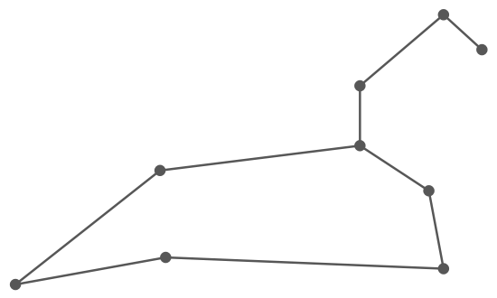

Star Constellation for Leo
Element: Fire
Leo Symbol

Leos are bold, warm, and loving. They are also the ultimate showmen. They can dazzle with the theatrical flair of a Broadway star and the charisma of a politician. They are captivating personalities. They have a way with words, and can speak eloquently on just about any topic, no matter how quickly they’ve just been introduced to it.
Leos inject ambition into everything they do. They are ruled by the heart. They are brash and confident and trust their instincts. Their actions are natural and effortless.
Leos have an unrelenting appetite for growth that is easily satiated by the praise of others. When they are hurting, it shows. They will use their anger as a protective wall to shield their vulnerabilities. They want to be perceived as unbreakable because they are scared of admitting vulnerability, needing things from other people, being incomplete.
Complimentary Signs to Leo:
Aries
Sagittarius